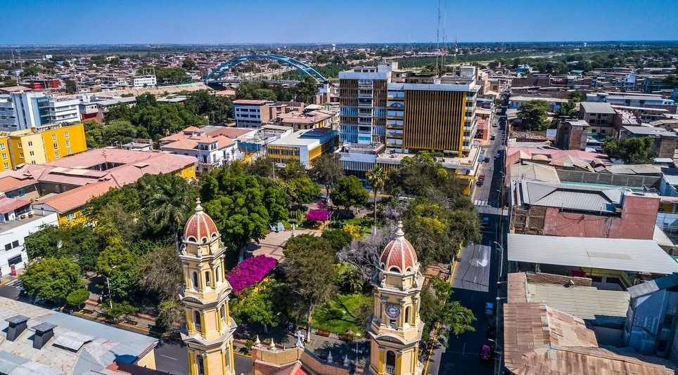
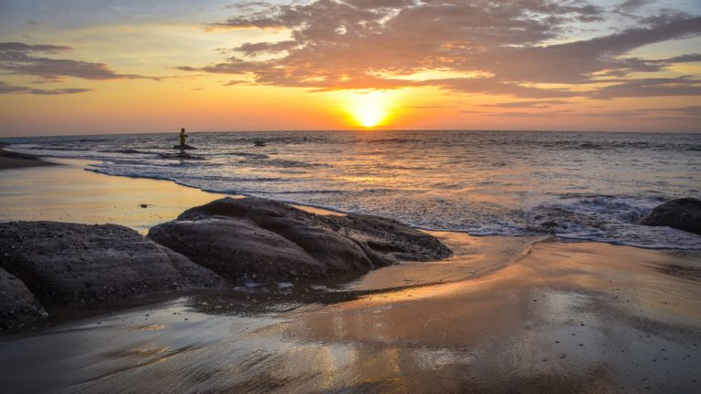
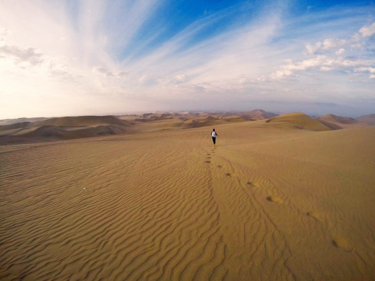
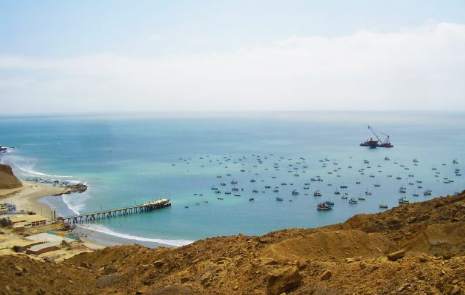
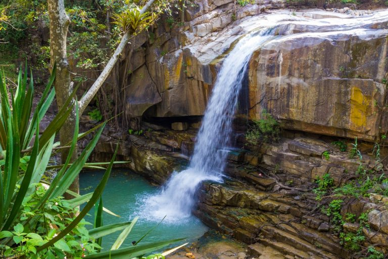
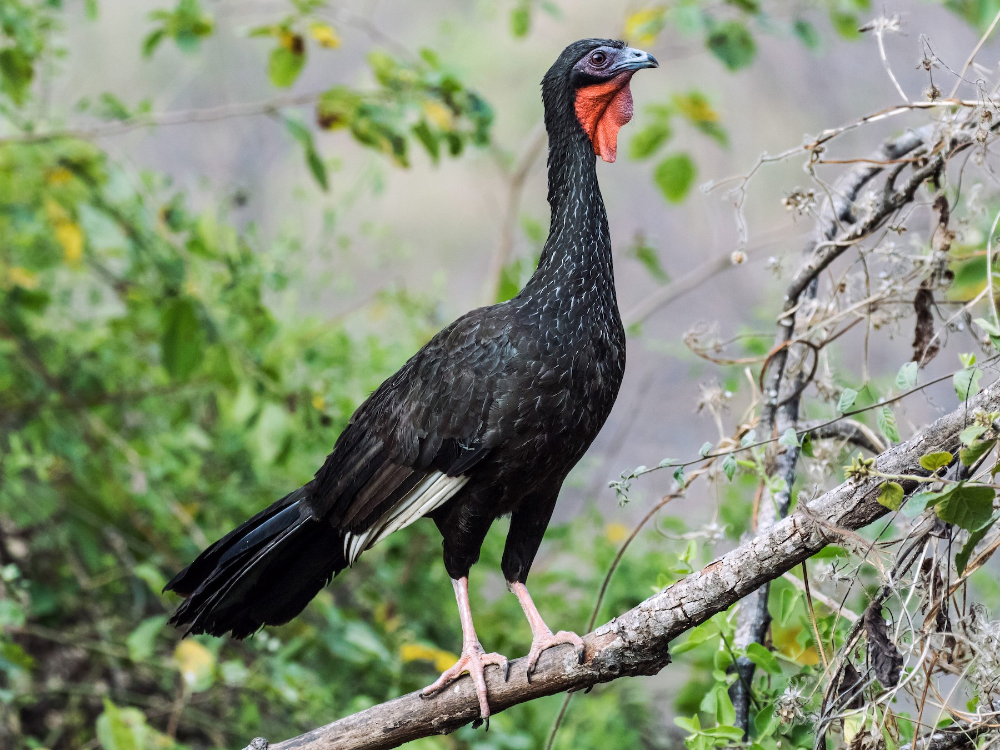
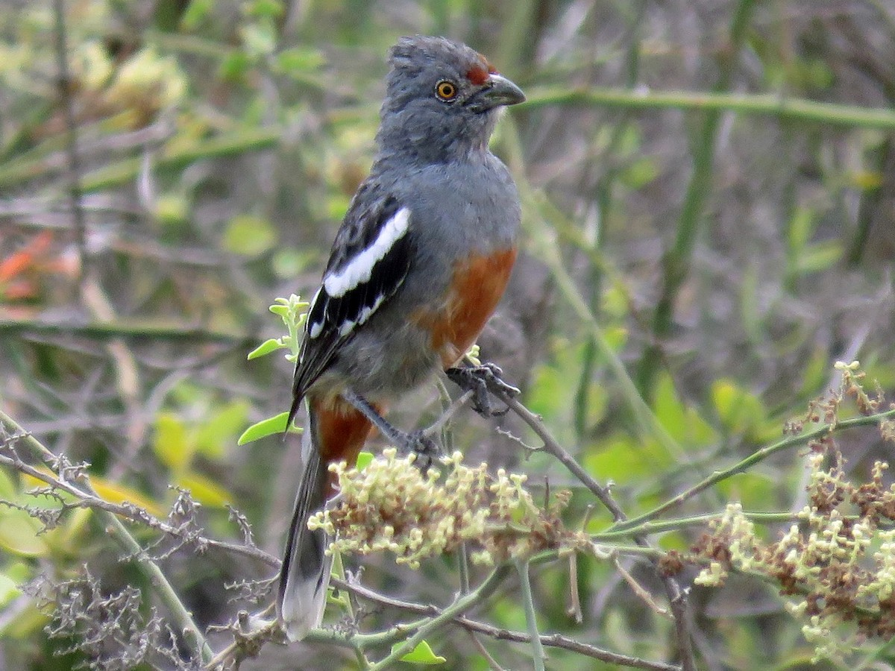

Piura es la capital de la región de Piura, en el noroeste de Perú. Es conocida por sus edificios coloniales, como la Catedral de Piura, con su altar dorado ornamental. La catedral está frente a la Plaza de Armas, una plaza pequeña con árboles de tamarindo. La Casa Museo Almirante Miguel Grau conserva fotos y recuerdos del héroe de guerra del siglo XIX. La Iglesia de San Francisco es donde Piura declaró su independencia de España en 1821.
Lugares Turisticos
Pocitas de Máncora

Este destino es el preferido de prácticamente todos los turistas que llegan hasta aquí.Esta singular playa recibe su nombre por las pozas naturales que el mar ha ido formando en las rocas que hay en la orilla. En ellas te puedes bañar como si estuvieras en una piscina natural y relajarte al máximo mirando el increíble paisaje alrededor.
Cómo llegar a las Pocitas de Máncora: llegar a las Pocitas es muy simple. Solo tienes que tomar un mototaxi en la ciudad de Máncora y en menos de 10 minutos estarás allí
Desierto de Sechura

Sechura, situado en el centro del departamento de Piura.Aquí se encuentra la famosa duna de Médano Blanco, conocida como una de las más bonitas de Perú y en la que podrás practicar sandboard, un deporte que pondrá a prueba tu adrenalina.Además, en la parte costera de este desierto están los Manglares de Vice, el Estuario de Virrillá y la Zona Reservada Illescas, tres lugares en los que vive variada fauna como los bellos flamencos o el gaviotín peruano, en peligro de extinción.
Cómo llegar: para llegar a este desierto deberás tomar un bus en el centro de Piura hasta el pueblo de Sechura, donde encontrarás mototaxis que te llevarán hasta los diferentes atractivos turísticos.
Playa Cabo Blanco

La Playa Cabo Blanco tiene un encanto especial muy aparte de sus paisajes.Las aguas turquesas de este lugar cuentan, además, con olas perfectas para la práctica de surf , en Cabo Blanco encontrarás diversos restaurantes de comida marina con los mejores platos de la costa peruana.
Cómo llegar a Cabo Blanco: para llegar a Cabo Blanco desde la ciudad de Piura, deberás tomar un bus con destino a Tumbes y bajarte en el pueblo de El Alto. Desde aquí te separan 7 kilómetros de la playa, a la que podrás llegar en mototaxi.
Catarata de Caracucho

En Piura también puedes darte un baño en zonas de agua dulce. Uno de estos lugares es la Catarata de Caracucho, una caída en la que liberarte del sofocante calor que caracteriza al departamento de Piura.Uno de los puntos entretenidos de este lugar es que para llegar hasta él hay que hacer una caminata de alrededor de dos horas a través del bosque Piedra de Toro, caracterizado por su verde vegetación y por sus curiosas piedras con forma de animales.
Cómo llegar a la Catarata de Caracucho: desde Piura deberás tomar un bus que te lleve hasta Morropón, a una hora y media de la ciudad. Una vez aquí, tendrás que tomar un mototaxi que te acerque hasta el inicio del sendero donde empieza la caminata.
Animal en Peligro de Extinción
La pava Aliblanca

Esta especie vive en el Bosque Seco de Frejolillo ubicado en Huancabamba, en Piura, el cual es uno de los últimos refugios. Según los últimos estudios, esta especie se encuentra en Lambayeque, Cajamarca y Piura, en este último departamento se concentra el 80% de la población, lo que constituye una razón suficiente para protegerla en su hábitat, amenazado por la tala indiscriminada y las concesiones mineras.
El Cotarrama Peruana

Los primeros registros de la cortarrama (su nombre científico es "Phytotoma Raimondii", en honor de Antonio Raimondi) datan de 1883. Entonces se sabía que esta ave se localizaba en 14 lugares que abarcaban toda la costa norte hasta Lima. No obstante, el científico inglés Jeremy Flanagan publicó en el 2010 un estudio que establece que la especie solo subsiste en Piura, Lambayeque y La Libertad. En la primera región está el 50% de los ejemplares.
Una de las principales causas que amenazan la existencia del ave en Piura es la tala indiscriminada del bosque seco de Talara, ubicado a dos horas y media de la ciudad de Piura. La madera obtenida de esta ilegal acción se utiliza para la elaboración artesanal de harina de pota y para la refinería informal de petróleo.
La ONG Naturaleza y Cultura Internacional y otras instituciones, invocan a las empresas petroleras que se ubican en la zona del bosq ue seco de Talara para que apoyen con financiamiento los planes de acción que se generen para conservar a la cortarrama peruana.
¿Como Llegar a Piura?
La ciudad de Piura se encuentra ubicada en el extremo Norte de la costa del Perú, a 981 Km. desde Lima, y a la frontera con el vecino país del Ecuador. Es la capital de la provincia y del departamento del mismo nombre. Se localiza a una altitud de 29 m.s.n.m. Debido a su localización geográfica, esta región presenta a los visitantes un extenso litoral con hermosas playas y balnearios, que son las favoritas para los visitantes.